“A recipe has no soul. You, as the cook, must bring soul to the recipe - Thomas Kellar”
Food is one of the most essential elements of life. Not only it helps us survive, but a fine delicacy can also nourish us holistically like our physical being, mental equilibrium, and societal relations. Good food brings everyone together and builds a strong foundation of relationships. In today’s digital world, new food places or dishes are discovered by top food Youtubers in India that present their reviews about existing or new restaurants, this way we all get to know the pros and cons of the restaurants prior to visiting it and can get a feel of the taste of their food.
Making food is an art and there are not many people who are adept and expert in this field, except all our mothers. Making food is therapeutic in various ways. It enlightens bonds between members of a family, friends, self-love, etc. Those who don't know surely want to learn this amazing art.
People actively try to learn cooking food or want to learn about various new places which serve great food. And hence, they turn towards top food YouTube channels in India to quench their curiosities. Food YouTubers provide various contents where they demystify the art of making food, finding the best food near you, introducing the exquisiteness of different culinary, etc.
Let’s highlight some stats as well!
- Statista reports that “Revenue in the Food market amounts to US$9.43tn in 2023. The market is expected to grow annually by 6.21% (CAGR 2023-2027).”
- The online food market value is bound to be doubled by 2027 in the Indian food and beverages industry.
We, as video production company, help food brands and businesses to achieve their goals/objectives by the marketing their food products through these youtubers.
Our experience of more than 6 years working with top food YouTube channels and food youtubers has equipped us with the strategies to position a food brand well.
Before we jump onto the list of top 20 food YouTubers in India, let us first explain who exactly are food YouTubers and what they are not, further, the people who know them can directly jump onto the list.
Who are Food YouTubers?
Food YouTubers are the content creators who produce creative videos on YouTube about different food recipes, healthy meal plans (No bake vlogs, etc.), different cuisines, types of diets; like, keto diet, gluten- free or vegan diet etc. They share a repository of recipes, habits, and traditions that not only diaries the food they are preparing, but also gives a foretaste of their lifestyle choices etc. Other food channels give reviews of restaurants/hotels etc.
Types of Food YouTube Channels
1. Food ideas YouTubers:
Food youtubers brings various food ideas about various seasons, meals of day, vacation specific, festive occasion, etc. Food ideas also help the viewers to reinvent their cooking and try something new.
2. Cooking tips food YouTubers:
Cooking is an art. No wonder we all love our mothers and grandmothers’ made food. They have mastered the art from sheer dedication, perseverance and compassion. Cooking tips consist of tips and tricks to make food tastier.
3. Recipe videos food YouTubers:
A great dish demands due diligence, order, and patience. Recipe video helps netizens to learn to cook new food and recipes.
4. Effective cooking food YouTubers:
Every food is prepared in a unique way. These food YouTubers help by showing the right way to prepare food to feel the best taste.
5. Fridge and kitchen organising food YouTubers:
These food YouTubers help in effectively and efficiently organise food, grocery, kitchen, and utensils. Hygienic food needs a hygienic condition to feel delicious.
6. Cooking and Posting vloggers:
These vloggers posts about various types of foods items which they cook on daily basis. From reliable recipes, to experiential food, every vlog is accompanied by a story.
7. Restaurant Reviews:
Most of the food vloggers jump from restaurants to restaurants and shops to local thelas/stalls to find, appreciate and share the taste the enjoyed there. Best food YouTubers in India, reconnoitre the nearest souks, the popular regional markets famous for their notable or innovative recipes, while other travel from places to places to bring the whole plates (experience) to audiences’ screen. With hotels & restaurants’ surveys, they bring out the best services, eminence of food, ambience, price range, and more.
How Do Food Youtubers Help Food Brands Grow?
Food YouTubers have already created consciousness about various food and related aspects of it. Food industry, both formal and informal, occupies a major market segment in valuation. Marketers know, that popularity of Food YouTubers can be leveraged to promote brand and its products. Due to close association with Food YouTubers, viewers feel more associated and trust them. They are more inspired to make purchasing decisions.
Food YouTubers also exhibit remarkable loyalty from their viewership. They can utilise information and awareness about products. In a country like India, where people tend to trust more on the words of someone they respect, brands utilize this bonding. They can also benefit food brands by promoting dining places, food vacations, food travel etc.
So, now let’s dive in present the list of top food YouTubers/food channels in India of 2024.
The List of Top 20 Food YouTubers in India / Food YouTube Channels That You Should Follow in 2024
Contents
- 1 Village Cooking Channel
- 2 Nisha Madhulika
- 3 Kabita’s Kitchen
- 4 Bharatz Kitchen
- 5 Grandpa Kitchen
- 6 Sanjeev Kapoor
- 7 Ranveer Brar
- 8 Nirmla Nehra
- 9 Vishwa and Akash Joshi
- 10 Yaman Agarwal
-
1. Village Cooking Channel
YouTube Channel: Village Cooking Channel
USP:
They will prepare all your favourite dishes with minimal ingredients and in grand quantities that will make you drool.
A cooking channel called Village Cooking Channel, which is based in the small village of Chinna Veeramangalam in Tamil Nadu's Pudukkottai district has surpassed 20.9 million subscribers and has a 1.04% engagement rate. More than 189 million people have watched its most popular video.
To see how they prepare both vegetarian and vegan Indian cuisines in large quantities while adhering to proper tradition, check out Village Cooking Channel, one of the best South Indian cooking channels on YouTube. The accuracy with which the channel presents its recipes and the way it displays traditional south Indian dishes are among its main draws. The grandfather who started the channel, M Periyathambi, is seen breaking down in tears and saying during one of the videos, "I started cooking when I was 25 years old, and even though I'm now 70, I never imagined I'd end up being so well-known. I want to express my gratitude to everyone who has helped us."
They adhere to tradition, believe in unity, and celebrate holidays like Pongal in a grand way that draws large crowds of people just like honey does. In January 2021, Rahul Gandhi also paid them a visit and assisted them in making mushroom biryani, which he later ate and enjoyed as well. Make sure you check out one of the best cooking channels on YouTube.
-
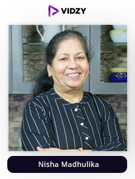
2. Nisha Madhulika
YouTube Channel: Nisha Madhulika
USP:
Her method of explanation and presentation is unique and a treat for the audience
Nisha Madhulika is an Indian chef, food blogger, YouTube star, and consultant for vegetarian restaurants. For her vegetarian Indian cuisine recipes, Nisha Madhulika is well-known on YouTube.
She has more than 13.6 million subscribers, making her the most popular female YouTuber in India. and one of the top ten most subscribed or best cooking channels on YouTube in India. She also contributes food columns to a number of websites, including those run by the popular Indian magazines Dainik Bhaskar, Amar Ujala, Indian Express, and Times of India.
Her area of expertise is Indian food, and she uses her YouTube channels to instruct her audience on how to easily prepare homemade Indian food. All of her videos reaching the million mark is a testament that she has been successful in her approach. The most popular video on her channel is a “petha sweet recipe” having more than 45 million views. If you are someone who is inclined towards food or want to learn new and exciting recipes, she is the ideal influencer!
-
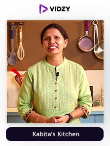
3. Kabita’s Kitchen
YouTube Channel: Kabita’s Kitchen
USP:
She can turn you into a pro chef with her short easy to understand recipes
Homemaker Kabita gave up her job as a banker to follow her passion for creating mouthwatering real Indian cuisine. She enjoys keeping all of her food preparations straightforward and simple to follow, and she prepares both vegetarian and non-vegetarian dishes. Additionally, she has a website called kabitaskitchen.com where you can search through a huge collection of recipes that include instructional videos. If you want to learn anything from how to make cheese poha cutlets to chicken in a pressure cooker, just subscribe to her channel. By the way, she taught Bhuvan Bam how to make Cheese Poha Cutlets.
In order to understand her viewers' preferences, Kabita takes into account the interests of her audience. She plans her upcoming content based on the prevailing trend. The interaction with the audience is the most important thing to Kabita. In her videos, she includes user feedback elements. The culinary master can draw a very interested audience because she serves a specific niche making her one of the finest food YouTubers in India.
-
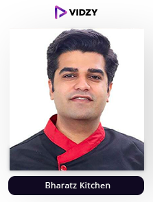
4. Bharatz Kitchen
YouTube Channel: Bharatz Kitchen
USP:
This channel communicates even the smallest of steps so that you are able to make restaurant like food at home
Bharat enjoys cooking and enjoys sharing his love of cooking with his viewers. No recipe is too challenging for him because he is a culinary wizard. There is a tonne of cooking videos on YouTube. While not all of them are excellent, the top ones will entertain you while teaching you the basics of cooking and assisting you in honing your culinary skills. And this is exactly that channel. His cooking style is very expressive, and he has more than 12.3 million subscribers as a result of his willingness to try new things. If you want to improve your cooking and eating abilities but aren't sure where to begin, check out one of the most well-known Indian cooking channels on YouTube.
Whether you need a chicken meal for the entire family or just want to learn how to slice an onion properly, he can help you out in the best way possible. More than 62 million people have watched his most popular video, which is a recipe for chicken curry. You did hear correctly. Bharat's dedication paid off because of the incredible audience that watched. He is in charge of producing, editing, communicating, and displaying his video content resulting in him putting out exactly what he or the audience wants making him one of the top 20 food YouTubers in India.
-
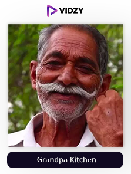
5. Grandpa Kitchen
YouTube Channel: Grandpa Kitchen
USP:
This channel is all about helping the needy and providing food knowledge in the best manner
A Telangana-based organization called Grandpa Kitchen promotes the idea that giving is caring. This group is committed to providing food and shelter to orphans and other disadvantaged people. One of the reasons they produce such content is for charitable causes, and all profits from it are donated to those causes. They are extremely compassionate people with extraordinary culinary skills, and they typically prepare non-vegetarian meals in enormous quantities. They prepare a variety of fish, mutton, chicken, biryanis, and other dishes. See how they make cakes bigger than the dining table by watching this channel. Everything is done on a large scale by the kind people in Grandpa's kitchen.
To ensure the highest quality of their videos, they use the appropriate tools and software. They regularly post intriguing and brand-new food videos. Grandpa's Kitchen takes pride in offering advice on a variety of vegetarian and non-vegetarian dishes through the comments section as well. Make sure you check out the content of one of the most famous food YouTubers in India to take your food-making skills to the next level
-
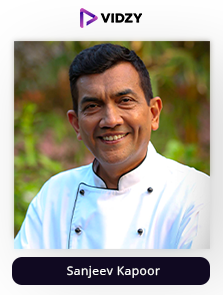
6. Sanjeev Kapoor
YouTube Channel: Sanjeev Kapoor Khazana
USP:
One of the grandest personalities in cooking teaching you all the new and exciting recipes
Sanjeev Kapoor is an Indian television personality, businessman, and celebrity chef. Khana Khazana, the longest-running television program in Asia, stars Kapoor; it is broadcast in 120 countries and attracted more than 500 million viewers in 2010. He also debuted his own "Food Food" channel in January 2011.
Having worked in a number of hotels, he eventually rose to the position of Executive Chef at the Centaur Hotel in Mumbai. He also won the Mercury Gold Award from the Indian Federation of Culinary Associations in Geneva, Switzerland, and the H&FS Best Executive Chef of India Award. He was selected to join the Singapore Airlines International Culinary Panel. He also serves as a brand ambassador for the Indian sunflower oil producer Sweekar Advanced. He is the most well-known Indian food ambassador.
Despite his enormous success, he still makes it a point to share new, simple recipes with his viewers on his YouTube channel, which has more than 7.1 million subscribers and a high engagement rate. His protein salad recipe has over 36 million views making it his most popular video as it is unique and healthy. Make sure you check out what one of the most famous food youtubers in India has to offer.
According to a report by Recogn, India could have 228 million native social commerce consumers by the end of 2022, a 45% increase from the current user base, as consumers learn about newer methods of online shopping such as through YouTube, WhatsApp, Facebook, and Instagram, if you want to tap into it too, this influencer will be the ideal one to have on your side!
-
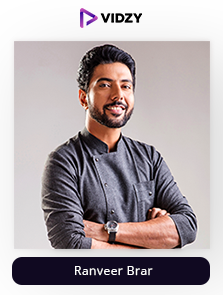
7. Ranveer Brar
YouTube Channel: Ranveer Brar
USP:
He will make all your food taste like that of a 5 star hotel through his tips and tricks
Ranveer is a judge on MasterChef India, a celebrity on television, an author, a restaurateur, a producer of food movies, and a philanthropist. One of the most well-known chefs in the nation is Ranveer Brar. He lives by the mantras of mastering the fundamentals and reverencing the kitchen, and he spreads them to others as well. Chef Brar describes himself as a food-Sufi on a never-ending culinary quest.
He has written a best-seller, is a well-liked television host and judge, and is an artist both in and out of the kitchen. For fantastic vegetarian and vegan recipes presented or explained in the most simple and professional manner possible, watch this channel. He has over 5.4 million subscribers and a great engagement rate getting him millions of views and comments of adoration on all of his videos. His most famous video titled “easy Tawa pizza” has over 10 million views! Make sure you check out the incredibly made content of one of India’s best food YouTubers.
-
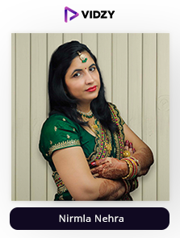
8. Nirmla Nehra
YouTube Channel: Nirmla Nehra
USP:
Learn all the recipes through videos beautifully explained and visualized
Humans have a habit to think that recipes with few ingredients are less tasty than those with a long list of intricate ingredients. Every time we eat out, we picture the delicacies prepared with exotic spices that are not widely available. However, the truth is that rather than what is in your food, it is the magic of the hands that can make you drool. A skilled chef can add the ideal amount of basic herbs to transform even bland pasta into something flavorful. The "Nimla Nehra" channel has more than 4.9 million subscribers as a result of this. Indian households don't typically keep all the ingredients necessary to prepare delectable meals on hand.
Therefore, we frequently open our favourite cookbook, turn the pages, select the recipe, and then quickly close it because some of the ingredients are missing. Does it sound like you? I can at least promise that after watching Nimla Nehra videos, it won't be the same as before. You'll be surprised to learn how few ingredients even the tastiest recipes require. Top Indian food YouTuber Nirmla only shares vegetarian Indian food recipes, so if you're a vegetarian, she can offer a variety of delectable dishes in easy ways. The dedication and the quality she shows make her one of India’s best food YouTubers.
-
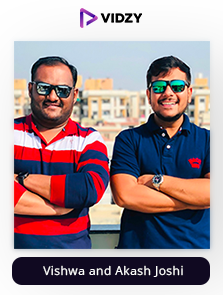
9. Vishwa and Akash Joshi
YouTube Channel: VIwa Food World
USP:
These brothers will make you drool with a variety of dishes being eaten in big quantities
Imagine finishing a large pizza and a large soda bottle in less than five minutes. Think about the calories and the shame of overeating. On the other hand, the Joshi brothers Akash and Vishwa aren't ashamed. They pull off this amazing feat every week for their YouTube channel "Viwa Food World," The idea to launch the YouTube channel came from Vishwa.
Akash was in Mumbai at that moment. When he came back, he helped with shooting and editing before getting involved. In the beginning, Vishwa used his phone to record videos as a simple experiment. When they noticed that their videos were being well received, they started to take them seriously.
They currently have more than 4.48 million subscribers and more than 868,000,000 total views. Only vegetarians may watch the Viwa Food World channel. The top Indian food vloggers on YouTube strive to create interesting and original content. They, therefore, travel throughout India in order to sample various vegetarian dishes and review them on youtube. By their own admission, Vishwa and Akash Joshi are both food enthusiasts. They are therefore unable to develop any kind of food aversion. They say, "Obviously, after a certain challenge, we don't feel like eating that specific dish for a day or two, but it's all temporary." (Foodies might identify with it.) If you love food, you must try this channel out as it is one of the best food YouTube channels in India.
-
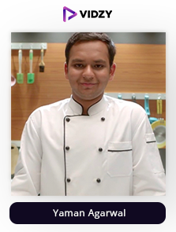
10. Yaman Agarwal
YouTube Channel: CookingShooking
USP:
He can teach you even the most complex recipes simply
Did you have a clear idea of your career goals when you were 12 years old? Hyderabadi boy Yaman Agarwal has been obsessed with food since he was 12 years old. For young and enthusiastic aspiring chefs, he is a true role model. Yaman Agarwal is a future chef as well as a food enthusiast. Watch him cook on his official YouTube channel. He approaches cooking like a game. When he was 12 years old, he used to enjoy watching his mother prepare meals. It was sufficient to peak his interest and motivate him to carry out independent internet research. He eventually found an entirely new world thanks to his searches on YouTube.
If you want to learn the ins and outs of cooking, his videos are just up to 14 or 15 minutes. His recipes are child's play in terms of simplicity. Anyone can confidently follow his instructions. He has a following of 4.45 million and a growing engagement rate thanks to him paying attention to each element of the video to give his audience a great experience and learning. With over 20 million views, home-style macaroni pasta stands to be his most popular dish. Make sure you check out the content of one of the best food YouTube channels in India!
-
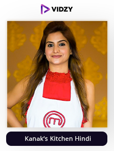
11. Kanak’s Kitchen Hindi
YouTube Channel: Kanak’s Kitchen Hindi
USP:
She is one of the most innovative chefs you will find to learn recipes
Although many people know Kanak as the top contestant from MasterChef India Season 1, she is also an entrepreneur and an eccentric innovator. Kanak is a talented cook who enjoys preparing her own meals. She is one of the best Indian food vloggers on YouTube. She likes experimenting with the classic recipes that her mother and grandmother taught her. She creates incredible fusion cuisine by combining them with fresh flavours and cooking methods. Each one of her dishes is a gourmet experience in and of itself.
In addition to modifying Indian cuisine to appease the westernized palate of today's generation, Kanak can transform western cuisine to excite ardent devotees of Indian cuisine. She is talented and makes the art of that caliber. Additionally, she possesses the rare talent to convert non-vegetarian recipes into authentic vegetarian fare without sacrificing flavour. On Wednesdays and Saturdays, she publishes new videos, and each type of cuisine has its own playlist, such as Indian, Continental, Thai, Mexican, American, Chinese, and Italian.
Along with creating excellent food, the Indian food YouTuber has a profound understanding of and appreciation for Ayurveda. She makes use of this information to add a special nutritional twist to each of her dishes. In her cooking, Kanak can match the tastes and flavours of her fruits, vegetables, spices, and herbs to their benefit for health and wellness. Consider making her recipes, which are not only tasty but also healthy and advantageous for you. In addition to being great for your health, Kanak's food also improves your appearance. Visit her YouTube channel to see that she has more than 3.5 million subscribers and that her most popular video has received up to 45 million views for mouthwatering food recipes. Make sure you checkout the content of one of the best food YouTube channels In India.
-
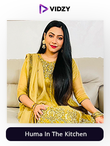
12. Huma In The Kitchen
YouTube Channel: Huma In The Kitchen
USP:
Her consistency and quality quill make you obsessed with her videos
You probably know Huma if you enjoy browsing YouTube for cooking tutorials as she is one of India’s best food YouTubers. Not long after she stepped foot on this platform, her YouTube channel "Huma in the Kitchen" quickly gained popularity. Her videos are suitable for everyone, whether you are a health enthusiast, a non-vegetarian, or you have a sweet tooth. Check out her channel's playlists right away. The variety of food recipe categories will astound you. There is a playlist of "popular uploads" whose thumbnail proudly displays "more than 33 million views" in large, bold type. Millions of people have watched her videos on "cheese paratha," "Dalgona coffee," "chicken paratha roll," and "chocolate cake in a pressure cooker"!
Indian food vlogger has more than 2.27 million subscribers already, and her number keeps rising. Additionally, her channel receives daily new visitors thanks to the consistency of her uploads. Huma understands that presentation is equally important to cooking, so every one of her creations resembles a professional chef's recipe. Since she merits it, her talent will undoubtedly keep viewers glued to her channel forever.
-
13. Dilsefoodie Official
YouTube Channel: Dilsefoodie Official
USP:
They will make you drool over what each corner of the country has to offer
The pursuit of food is a fulfilling activity that challenges your palate. Typically, people order food online, but this foodie couple will walk a distance to consume their meal while it is still hot and fresh. They have traveled through several Indian cities, and they still have more milestones to reach. They observe the chefs as they work and conduct interviews with them before filming them enjoying the food. They typically seek out local fare but occasionally enjoy fine dining. Watch this channel to unearth your inner chef as they are one of India's best food YouTubers. To discover undiscovered culinary talents and showcase them to the world, the Duo travels across the nation.
These YouTubers have collected dishes from various cultures, countries, and religions in one location and presented them in the best manner possible. This being the reason, this channel has more than 2 million subscribers and a great engagement rate. As an average person spends over 100 minutes on video content every single day as per smart insights, it is clear that it is the most effective form of marketing, if you want to take your business to new heights with it, choosing or collaborating with this influencer will be beneficial for you! Make sure you check out their content!
-
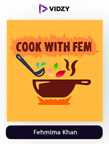
14. Fehmima Khan
YouTube Channel: Cook with Fem
USP:
Learn all about cooking in one place
On YouTube, you can find comedians, photographers, filmmakers, chefs, IT nerds, and more. There is no shortage of imaginative YouTube channels, and with over 1 billion monthly active users on the most well-known video-sharing platform, YouTube for Artists is only going to become more and more well-liked. On Indian YouTube Channels, a lot of talent and skills are unquestionably promoted daily. Only a select few food youTubers and cooking tutorials consistently impart knowledge, uplift our spirits, and inspire us to get our hands dirty and cook. Cook with fem is one of the best food YouTubers in India who have graced our feeds over the years.
Due to its amazing videos of simple recipes that are easy to follow or prepare, one of the most well-liked Indian cooking channels on YouTube has over 1.95 million subscribers and an engagement rate of 0.07%. With over 40 million subscribers, its most popular video, "hyderabadi chicken dum," is very popular. Because of the connection fehmima has made with her audience and the incredible quality she upholds, it is one of the most popular YT channels among brands. Check out her channel if you want to learn how to cook properly.
-
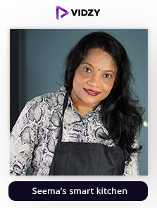
15. Seema’s smart kitchen
YouTube Channel: Seema’s Smart Kitchen
USP:
She can make you nail your cooking skills every time you make something through her easy-to-understand videos
There is a sweet origin story for this channel or one of the best food YouTube channels in India, which focuses on home cooking. Our host Seems was eating a puff samosa when her son suggested she launch her own cooking channel. The rest is history, as they say. The success of this endeavour is attributed to Seem's son, and they began making videos using smartphones; perhaps this is why it is referred to as "Seem's Smart Kitchen." The purpose of my channel, in Seem's own words, is to impart my culinary expertise to those who have a passion for cooking. I enjoy motivating and interacting with people like this. I invite you to join this channel and share all of your insightful recommendations and thrilling experiences.
You can find delicious and simple vegetarian recipes here. This channel is the ideal place to develop your intermediate and advanced cooking abilities. You can find recipes that are ideal for you, regardless of your level of cooking expertise. To advance your cooking abilities, subscribe to this channel.
-
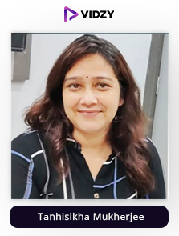
16. Tanhisikha Mukherjee
YouTube Channel: Tanhir Paakshala
USP:
Her high-quality easy to learn cooking videos will make you understand cooking inside out
Tanhisikha Mukherjee is one of the best Indian food vloggers and the creator of "Tanhir Paakshaala." Her love of cooking inspired her to join the platform so she could share her incredible recipes in Bengali, her native tongue. She is a proponent of making cooking instructions simpler for novices to understand. Learning authentic recipes from the convenience of your own home with simple directions is very beneficial. The sheer volume of uploads on her channel will astound you. She has everything covered, whether it be ice cream recipes, delicious snacks, or a mouthwatering main course. On September 6, 2019, Tanhisikha started on YouTube and has since racked up over 1.8 million subscribers!
She uploads new recipes every evening, which makes her channel very popular. That implies that "Tanhir Paakshala" is more valuable than any cookbook you have on your shelf. Your life will be changed for the better if you subscribe to this channel if you don't like to make the same dishes over and over but still want to indulge in delicacies every day. Even though there may be millions of food vloggers online, not all of them are qualified to teach you the skills you need to become a self-sufficient cook.
-
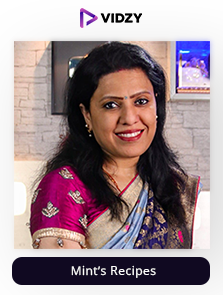
17. Mint’s Recipes
YouTube Channel: MintsRecipes
USP:
Learn everything from veg/non-veg dishes to desserts at one place
Do you enjoy baking but have an egg allergy? Are you a strict vegan or vegetarian? Let's be real here. At one point, no one could even think of making eggless cake. Even today, the majority of people still view eggless cooking as being inferior to recipes that call for eggs. However, the world of cooking has been revolutionized by ongoing research and incredible hacks. To get advice for your eggless food recipes and much more, you can find thousands of Indian food vloggers on YouTube. The channel "MintsRecipes" however reflects one of the best Indian food vloggers.
The channel offers homemade desserts, how-to advice, and methods to make food taste just like what you would get in a restaurant or a reputable bakery. It also offers vegetarian and eggless food recipes from India. Additionally, new videos are added every Tuesday and Saturday at 1:00. It's uncommon to find other channels with this level of consistency. More than 1.2 million people have subscribed to "MintsRecipes" as a result of the high caliber and reliability of the videos. It's time for you to become a part of the incredible vegetarian and vegan community. Join the channel right away.
-
18. Deshi Food Channel
YouTube Channel: Deshi Food Channel
USP:
It will provide you with a whole experience of traditional cooking
If the recipes are real and the content features the tranquil beauty of the countryside, then watching cooking videos is a delight. Deshi Food Channel, one of the most watched Indian food channels on YouTube with 848K subscribers, is so well-liked because of this. Rural cooking has completely taken over the platform. The videos contain elements that have a soothing effect. Imagine the sound of heavy rains with the sizzling chicken fry. You're going to fall in love with the recipe, I'm sure of it. Traditional cooking however is difficult to find these days, which piques viewers' interest.
Deshi Food Channel's guiding principle is that food should be simple, healthy, and prepared using organic, farm-fresh ingredients whenever possible. Because of this, a lot of people enjoy following their recipes, and their channel is regarded as one of the best for authentic and delectable village recipes from India. For instance, the beginning of their video on "mashed raw mango" shows children playing in the village as they pick the fresh, unripe mangoes from the trees, peel them, chop them, and then finally mash them with the spices on a traditional stone grinder. The kids get to try the recipe at the end of the video. Stunningly mesmerizing!
-
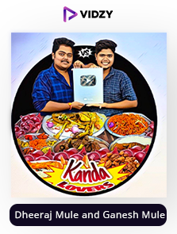
19. Dheeraj Mule and Ganesh Mule
YouTube Channel: Kanda Lovers
USP:
You will drool and be obsessed with the tasty food they eat
The proud founders of "Kanda Lovers," a well-known food challenge vlog in India, are Dheeraj and Ganesh Mule. What then is Kanda? Onions are known as "Kanda" in Marathi, and the name itself denotes a love of food and spices. Can you quantify your love of food? Most likely not with a scale, but rather by demonstrating how much you can eat. On August 21, 2018, the best food vloggers on YouTube India launched "Kanda Lovers," which has since racked up 587K subscribers. This alone demonstrates how well-liked their videos are. Food challenges are the focus of their channel. Can you picture consuming 60 chicken momos for lunch or consuming an entire idli sambar in one bite?
These challenges are genuine and quite entertaining to watch, strange as they may sound. The challenges can be hilarious at times due to which they are one of the most watched Indian food channels on YouTube. More than 1.5 million people watched their challenge video in which they ate an 8kg full goat! The best channel to subscribe to is Kanda Lovers if you enjoy watching food-related videos.
-
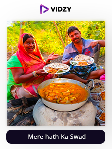
20. Mere hath Ka Swad
YouTube Channel: Mere hath ka swad
USP:
They will help you make all your favourite food with minimal ingredients
Many recipes will seem incredibly simple once you've mastered some basic cooking techniques, and you'll soon be whipping up delicious dinners in no time. A weekly meal plan also ensures that you'll use the ingredients you bought when cooking, leading to delicious results and a lovely improvement in confidence and skill. I firmly believe that if you can cook, anything is possible in this world. The mere hath ka swad channel is one of the best tools for helping you learn this amazing skill.
It has a feed full of incredible recipes that the entire family cooks and enjoys together. These recipes are explained in such an understandable way that you can easily make even the most complicated dishes. With 459k subscribers and a 0.70 percent engagement rate, this channel is popular. More than 3.8 million people have watched the most popular video, which is about gulab jamun from gehu ka atta. Just by looking at their video thumbnails and titles, your mouth will start to water. Make sure to subscribe to one of the top food YouTubers in India and prepare delectable meals for your family.
To Sum Up
Just by seeing the views and variety in the content of these best food YouTube channels in India, you must have got an idea of how much power they hold among the audience. To leverage this power and benefit your brand in an unprecedented way, professional support is necessary as there is a lot of cutthroat competition. Each brand is going after influencer marketing as it gives the best returns.
As per our research, Vidzy is the one that shines through and is being adopted by the top brands like amazon, etc. So, what are you waiting for? Get in touch with them, now!